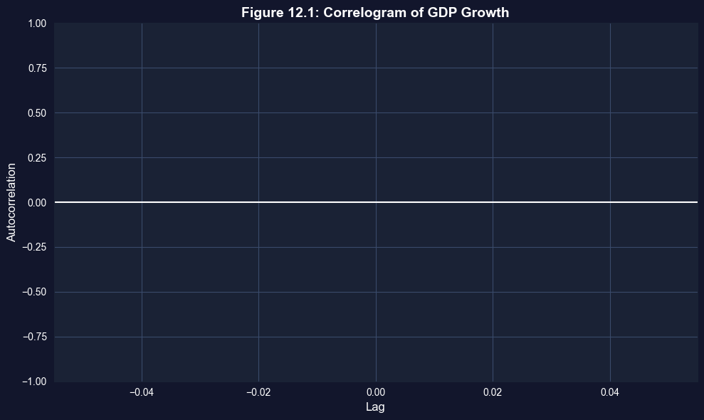

This notebook provides an interactive introduction to advanced topics in regression inference and prediction. All code runs directly in Google Colab without any local setup.
This chapter covers advanced topics that extend the multiple regression framework: robust standard errors for different data structures, prediction of outcomes, and deeper understanding of estimation and testing optimality.
Learning Objectives:
By the end of this chapter, you will be able to:
Understand when to use heteroskedastic-robust, cluster-robust, and HAC-robust standard errors
Distinguish between prediction of average outcomes and individual outcomes
Compute prediction intervals for conditional means and forecasts
Understand the impact of nonrepresentative samples on regression estimates
Recognize the difference between unbiased and best (most efficient) estimators
Understand Type I and Type II errors in hypothesis testing
Appreciate the role of bootstrap methods as an alternative to classical inference
Know when OLS with robust SEs is preferred over more efficient estimators like FGLS
Datasets used:
AED_HOUSE.DTA: 29 houses sold in Davis, California (1999) — for robust SEs and prediction
AED_REALGDPPC.DTA: Real GDP per capita growth (241 observations) — for HAC standard errors
Key economic questions:
Do conclusions about house prices change with robust standard errors?
How precisely can we predict an individual house’s price vs. the average price?
What happens to inference when our sample is not representative?
Chapter outline:
12.1 Example - House Price Prediction
12.2 Inference with Robust Standard Errors
12.3 Prediction
12.4 Nonrepresentative Samples
12.5 Best Estimation Methods
12.6 Best Confidence Intervals
12.7 Best Tests
Key Takeaways
Practice Exercises
Case Studies
Estimated time: 60-75 minutes
Setup
First, we import the necessary Python packages and configure the environment for reproducibility. All data will stream directly from GitHub.
# Import required packagesimport numpy as npimport pandas as pdimport matplotlib.pyplot as pltimport seaborn as snsimport statsmodels.api as smfrom statsmodels.formula.api import olsfrom statsmodels.regression.linear_model import OLSfrom scipy import statsfrom statsmodels.graphics.tsaplots import plot_acffrom statsmodels.tsa.stattools import acfimport randomimport os# Set random seeds for reproducibilityRANDOM_SEED =42random.seed(RANDOM_SEED)np.random.seed(RANDOM_SEED)os.environ['PYTHONHASHSEED'] =str(RANDOM_SEED)# GitHub data URLGITHUB_DATA_URL ="https://raw.githubusercontent.com/quarcs-lab/data-open/master/AED/"# Set plotting stylesns.set_style("whitegrid")plt.rcParams['figure.figsize'] = (10, 6)print("Setup complete! Ready to explore further topics in multiple regression.")
Setup complete! Ready to explore further topics in multiple regression.
12.1: Example - House Price Prediction
We’ll work with two datasets:
House price data for cross-sectional robust inference
GDP growth data for time series HAC inference
# Read house datadata_house = pd.read_stata(GITHUB_DATA_URL +'AED_HOUSE.DTA')print("House Data Summary:")print(data_house.describe())print("\nFirst few observations:")print(data_house[['price', 'size', 'bedrooms', 'bathrooms', 'lotsize', 'age', 'monthsold']].head())
where \(\tilde{x}_{ji}\) are residuals from regressing \(x_j\) on other regressors, and \(\hat{u}_i\) are OLS residuals.
print("="*70)print("12.2 INFERENCE WITH ROBUST STANDARD ERRORS")print("="*70)# Estimate with default standard errorsmodel_default = ols('price ~ size + bedrooms + bathrooms + lotsize + age + monthsold', data=data_house).fit()print("\nRegression with Default Standard Errors:")print(model_default.summary())
======================================================================
12.2 INFERENCE WITH ROBUST STANDARD ERRORS
======================================================================
Regression with Default Standard Errors:
OLS Regression Results
==============================================================================
Dep. Variable: price R-squared: 0.651
Model: OLS Adj. R-squared: 0.555
Method: Least Squares F-statistic: 6.826
Date: Wed, 21 Jan 2026 Prob (F-statistic): 0.000342
Time: 15:04:03 Log-Likelihood: -330.74
No. Observations: 29 AIC: 675.5
Df Residuals: 22 BIC: 685.1
Df Model: 6
Covariance Type: nonrobust
==============================================================================
coef std err t P>|t| [0.025 0.975]
------------------------------------------------------------------------------
Intercept 1.378e+05 6.15e+04 2.242 0.035 1.03e+04 2.65e+05
size 68.3694 15.389 4.443 0.000 36.454 100.285
bedrooms 2685.3151 9192.526 0.292 0.773 -1.64e+04 2.17e+04
bathrooms 6832.8800 1.57e+04 0.435 0.668 -2.58e+04 3.94e+04
lotsize 2303.2214 7226.535 0.319 0.753 -1.27e+04 1.73e+04
age -833.0386 719.335 -1.158 0.259 -2324.847 658.770
monthsold -2088.5036 3520.898 -0.593 0.559 -9390.399 5213.392
==============================================================================
Omnibus: 1.317 Durbin-Watson: 1.259
Prob(Omnibus): 0.518 Jarque-Bera (JB): 0.980
Skew: 0.151 Prob(JB): 0.612
Kurtosis: 2.152 Cond. No. 2.59e+04
==============================================================================
Notes:
[1] Standard Errors assume that the covariance matrix of the errors is correctly specified.
[2] The condition number is large, 2.59e+04. This might indicate that there are
strong multicollinearity or other numerical problems.
# Estimate with heteroskedastic-robust standard errors (HC1)model_robust = ols('price ~ size + bedrooms + bathrooms + lotsize + age + monthsold', data=data_house).fit(cov_type='HC1')print("\nRegression with Heteroskedastic-Robust Standard Errors (HC1):")print(model_robust.summary())
Regression with Heteroskedastic-Robust Standard Errors (HC1):
OLS Regression Results
==============================================================================
Dep. Variable: price R-squared: 0.651
Model: OLS Adj. R-squared: 0.555
Method: Least Squares F-statistic: 6.410
Date: Wed, 21 Jan 2026 Prob (F-statistic): 0.000514
Time: 15:04:03 Log-Likelihood: -330.74
No. Observations: 29 AIC: 675.5
Df Residuals: 22 BIC: 685.1
Df Model: 6
Covariance Type: HC1
==============================================================================
coef std err z P>|z| [0.025 0.975]
------------------------------------------------------------------------------
Intercept 1.378e+05 6.55e+04 2.102 0.036 9324.785 2.66e+05
size 68.3694 15.359 4.451 0.000 38.266 98.473
bedrooms 2685.3151 8285.528 0.324 0.746 -1.36e+04 1.89e+04
bathrooms 6832.8800 1.93e+04 0.354 0.723 -3.1e+04 4.46e+04
lotsize 2303.2214 5328.860 0.432 0.666 -8141.152 1.27e+04
age -833.0386 762.930 -1.092 0.275 -2328.353 662.276
monthsold -2088.5036 3738.270 -0.559 0.576 -9415.379 5238.372
==============================================================================
Omnibus: 1.317 Durbin-Watson: 1.259
Prob(Omnibus): 0.518 Jarque-Bera (JB): 0.980
Skew: 0.151 Prob(JB): 0.612
Kurtosis: 2.152 Cond. No. 2.59e+04
==============================================================================
Notes:
[1] Standard Errors are heteroscedasticity robust (HC1)
[2] The condition number is large, 2.59e+04. This might indicate that there are
strong multicollinearity or other numerical problems.
Key Concept 12.1: Heteroskedastic-Robust Standard Errors
When error variance is not constant across observations, default OLS standard errors are invalid. Heteroskedastic-robust (HC1) SEs correct this problem without changing the coefficient estimates themselves. Only the standard errors, \(t\)-statistics, and confidence intervals change. For cross-sectional data, reporting HC1 robust SEs is considered best practice.
Comparison: Default vs. Robust Standard Errors
Let’s systematically compare the standard errors and see how inference changes.
Interpreting the Comparison: What Changed?
Understanding the Results:
Looking at the SE Ratio column, we can see how robust standard errors differ from default ones:
When SE Ratio > 1.0: Robust SE is larger than default SE
Suggests heteroskedasticity is present
Default SEs were understating uncertainty
t-statistics decrease, p-values increase
We were too confident in rejecting null hypotheses
When SE Ratio ≈ 1.0: Robust SE similar to default SE
Little evidence of heteroskedasticity for this variable
Both methods give similar inference
When SE Ratio < 1.0: Robust SE smaller than default SE
Unusual but possible
Could indicate negative correlation between x² and residuals
Practical Implications:
Coefficient estimates unchanged: OLS point estimates are the same regardless of SE type
Inference changes: Variables significant with default SEs might become insignificant with robust SEs
Publication standard: Most journals now require robust SEs for cross-sectional data
Conservative approach: When in doubt, report robust SEs (they’re generally more credible)
Rule of thumb: If robust SEs differ substantially (>30% change), heteroskedasticity is likely present and you should use robust inference.
HAC Standard Errors for Time Series
Time series data often exhibit autocorrelation: current errors correlated with past errors.
Example: GDP growth tends to persist
Positive shock today → likely positive next period
# Load GDP growth datadata_gdp = pd.read_stata(GITHUB_DATA_URL +'AED_REALGDPPC.DTA')print("\n"+"="*70)print("HAC Standard Errors for Time Series Data")print("="*70)print("\nGDP Growth Data Summary:")print(data_gdp['growth'].describe())# Mean of growthmean_growth = data_gdp['growth'].mean()print(f"\nMean growth rate: {mean_growth:.6f}")
======================================================================
HAC Standard Errors for Time Series Data
======================================================================
GDP Growth Data Summary:
count 241.000000
mean 1.990456
std 2.178097
min -4.772172
25% 0.892417
50% 2.089633
75% 3.314238
max 7.630545
Name: growth, dtype: float64
Mean growth rate: 1.990456
# Autocorrelation analysisprint("\nAutocorrelations at multiple lags:")acf_values = acf(data_gdp['growth'], nlags=5, fft=False)for i inrange(6):print(f" Lag {i}: {acf_values[i]:.6f}")print("\nInterpretation:")print(" - Lag 0 correlation is always 1.0 (correlation with itself)")print(" - Positive lag 1 correlation suggests persistence")print(" - Autocorrelation decays with lag length")
Autocorrelations at multiple lags:
Lag 0: nan
Lag 1: nan
Lag 2: nan
Lag 3: nan
Lag 4: nan
Lag 5: nan
Interpretation:
- Lag 0 correlation is always 1.0 (correlation with itself)
- Positive lag 1 correlation suggests persistence
- Autocorrelation decays with lag length
# Correlogramfig, ax = plt.subplots(figsize=(10, 6))plot_acf(data_gdp['growth'], lags=10, ax=ax, alpha=0.05)ax.set_xlabel('Lag', fontsize=12)ax.set_ylabel('Autocorrelation', fontsize=12)ax.set_title('Figure 12.1: Correlogram of GDP Growth', fontsize=14, fontweight='bold')plt.tight_layout()plt.show()print("The correlogram shows autocorrelation at various lags.")print("Blue shaded area = 95% confidence bands under null of no autocorrelation.")

The correlogram shows autocorrelation at various lags.
Blue shaded area = 95% confidence bands under null of no autocorrelation.
Key Concept 12.2: HAC Standard Errors for Time Series
In time series data, errors are often autocorrelated — today’s shock persists into tomorrow. HAC (heteroskedasticity and autocorrelation consistent) standard errors, also called Newey-West SEs, account for both heteroskedasticity and autocorrelation. The lag length \(m\) must be specified; a common rule of thumb is \(m = 0.75 \times T^{1/3}\).
Interpreting HAC Standard Errors
What the Results Tell Us:
Comparing the three standard error estimates for the mean growth rate:
Default SE (assumes no autocorrelation):
Smallest standard error
Assumes errors are independent over time
Underestimates uncertainty when autocorrelation exists
HAC with lag 0 (het-robust only):
Accounts for heteroskedasticity but not autocorrelation
Often similar to default in time series
Still underestimates uncertainty if autocorrelation present
HAC with lag 5 (Newey-West):
Accounts for both heteroskedasticity AND autocorrelation
Larger SE reflects true uncertainty
More conservative but valid inference
Why is HAC SE larger?
Autocorrelation creates information overlap between observations:
Key Concept 12.3: Predicting Conditional Means vs. Individual Outcomes
Predicting the average outcome \(E[y|x^*]\) is more precise than predicting an individual \(y|x^*\). The forecast variance equals the conditional mean variance plus \(\text{Var}(u^*)\): \(\text{Var}(\hat{y}_f) = \text{Var}(\hat{y}_{cm}) + \sigma^2\). As \(n \to \infty\), the conditional mean SE shrinks to zero, but the forecast SE remains at least \(s_e\) — a fundamental limit on individual predictions.
Why Are Prediction Intervals So Much Wider?
The Fundamental Difference:
Looking at the two panels, you’ll notice the prediction interval (blue) is dramatically wider than the confidence interval (red). This isn’t a mistake—it reflects a fundamental distinction in what we’re predicting.
Confidence Interval for E[Y|X] (Red):
Predicts the average price for all 2000 sq ft houses
Uncertainty comes only from estimation error in β̂
As sample size increases (n → ∞), this interval shrinks to zero
Formula includes: 1/n term (goes to 0 as n grows)
Prediction Interval for Y (Blue):
Predicts an individual house price
Uncertainty comes from:
Estimation error in β̂ (same as CI)
Irreducible randomness in the individual outcome (u*)
Even with perfect knowledge of β, individual predictions remain uncertain
Formula includes: “1 +” term (never goes away)
Intuitive Example:
Imagine predicting height from age:
Conditional mean: Average height of all 10-year-olds = 140 cm
We can estimate this average very precisely
CI might be [139, 141] cm
Actual value: A specific 10-year-old’s height
Could be anywhere from 120 to 160 cm
PI might be [125, 155] cm
Even knowing the average perfectly doesn’t eliminate individual variation
First term (1/n): Decreases with sample size—more data reduces uncertainty
Second term: Distance from mean matters—extrapolation is risky
Prediction at \(x^* = \bar{x}\) (sample mean) is most precise
Prediction far from \(\bar{x}\) is less precise
Both terms → 0 as n → ∞ (perfect knowledge of E[Y|X])
For Actual Value:\[se(\hat{y}_f) = \hat{\sigma} \sqrt{1 + \frac{1}{n} + \frac{(x^* - \bar{x})^2}{\sum(x_i - \bar{x})^2}}\]
The critical “1 +”: Represents \(Var[u^*]\), the future error term
This term never disappears, even with infinite data
Dominates the formula in moderate to large samples
Numerical Insight:
In our example:
\(\hat{\sigma}\) (RMSE) ≈ $90k (this is the irreducible uncertainty)
\((1/n)\) term ≈ 0.034 (small with n=29)
Distance term varies with prediction point
For predictions near the mean:
\(se(\hat{y}_{cm})\) ≈ $90k × √0.034 ≈ $17k (mainly from 1/n)
\(se(\hat{y}_f)\) ≈ $90k × √1.034 ≈ $92k (mainly from the “1”)
The “1 +” term is why:
Prediction intervals don’t shrink much with more data
Individual predictions remain uncertain even with perfect models
\(se(\hat{y}_f) \approx \hat{\sigma}\) in large samples
Geometric Interpretation:
The funnel shape in prediction plots comes from the distance term:
Narrow near \(\bar{x}\) (center of data)
Wider at extremes (extrapolation region)
But even at the center, PI is wide due to the “1” term
Practical Lesson:
When presenting predictions:
Always acknowledge the “1 +” uncertainty
Be most confident about predictions near the data center
Be especially cautious about extrapolation (predictions outside the data range)
Understand that better models reduce estimation error but not irreducible randomness
Prediction at Specific Values
Let’s predict house price for a 2000 square foot house.
Manual Calculation of Standard Errors
Let’s manually calculate the standard errors to understand the formulas.
Prediction with Multiple Regression
Now let’s predict using the full multiple regression model.
print("\n"+"="*70)print("Prediction for Multiple Regression")print("="*70)model_multi = ols('price ~ size + bedrooms + bathrooms + lotsize + age + monthsold', data=data_house).fit()# Predict for specific valuesnew_house = pd.DataFrame({'size': [2000],'bedrooms': [4],'bathrooms': [2],'lotsize': [2],'age': [40],'monthsold': [6]})pred_multi = model_multi.get_prediction(sm.add_constant(new_house))print("\nPrediction for:")print(" size=2000, bedrooms=4, bathrooms=2, lotsize=2, age=40, monthsold=6")print(f"\nPredicted price: ${pred_multi.predicted_mean[0]:.2f}")# Confidence interval for conditional meanci_mean_multi = pred_multi.conf_int(alpha=0.05)print(f"\n95% CI for E[Y|X]:")print(f" [${ci_mean_multi[0, 0]:.2f}, ${ci_mean_multi[0, 1]:.2f}]")print(f" SE: ${pred_multi.se_mean[0]:.2f}")# Prediction interval for actual values_e_multi = np.sqrt(model_multi.mse_resid)s_y_cm_multi = pred_multi.se_mean[0]s_y_f_multi = np.sqrt(s_e_multi**2+ s_y_cm_multi**2)n_multi =len(data_house)k_multi =len(model_multi.params)tcrit_multi = stats.t.ppf(0.975, n_multi - k_multi)pi_lower = pred_multi.predicted_mean[0] - tcrit_multi * s_y_f_multipi_upper = pred_multi.predicted_mean[0] + tcrit_multi * s_y_f_multiprint(f"\n95% PI for Y:")print(f" [${pi_lower:.2f}, ${pi_upper:.2f}]")print(f" SE: ${s_y_f_multi:.2f}")print("\nMultiple regression provides more precise conditional mean predictions.")print("But individual predictions still have large uncertainty.")
======================================================================
Prediction for Multiple Regression
======================================================================
Prediction for:
size=2000, bedrooms=4, bathrooms=2, lotsize=2, age=40, monthsold=6
Predicted price: $257690.80
95% CI for E[Y|X]:
[$244234.97, $271146.63]
SE: $6488.26
95% PI for Y:
[$204255.32, $311126.28]
SE: $25766.03
Multiple regression provides more precise conditional mean predictions.
But individual predictions still have large uncertainty.
Prediction with Robust Standard Errors
When heteroskedasticity is present, we should use robust standard errors for prediction intervals too.
print("\n"+"="*70)print("Prediction with Heteroskedastic-Robust SEs")print("="*70)model_multi_robust = ols('price ~ size + bedrooms + bathrooms + lotsize + age + monthsold', data=data_house).fit(cov_type='HC1')pred_multi_robust = model_multi_robust.get_prediction(sm.add_constant(new_house))print(f"\nPredicted price: ${pred_multi_robust.predicted_mean[0]:.2f}")# Robust confidence interval for conditional meanci_mean_robust = pred_multi_robust.conf_int(alpha=0.05)print(f"\nRobust 95% CI for E[Y|X]:")print(f" [${ci_mean_robust[0, 0]:.2f}, ${ci_mean_robust[0, 1]:.2f}]")print(f" Robust SE: ${pred_multi_robust.se_mean[0]:.2f}")# Robust prediction intervals_y_cm_robust = pred_multi_robust.se_mean[0]s_y_f_robust = np.sqrt(s_e_multi**2+ s_y_cm_robust**2)print(f"\nRobust 95% PI for Y:")print(f" Robust SE for actual value: ${s_y_f_robust:.2f}")print("\nComparison of standard vs. robust:")print(f" SE (standard): ${s_y_cm_multi:.2f}")print(f" SE (robust): ${s_y_cm_robust:.2f}")print(f" Ratio: {s_y_cm_robust / s_y_cm_multi:.3f}")
======================================================================
Prediction with Heteroskedastic-Robust SEs
======================================================================
Predicted price: $257690.80
Robust 95% CI for E[Y|X]:
[$244694.26, $270687.34]
Robust SE: $6631.01
Robust 95% PI for Y:
Robust SE for actual value: $25802.35
Comparison of standard vs. robust:
SE (standard): $6488.26
SE (robust): $6631.01
Ratio: 1.022
Key Concept 12.4: Why Individual Forecasts Are Imprecise
Even with precisely estimated coefficients, predicting an individual outcome is imprecise because the forecast must account for the unobservable error \(u^*\). The forecast standard error satisfies \(se(\hat{y}_f) \geq s_e\) — it is at least as large as the regression’s standard error. This means 95% prediction intervals are at least \(\pm 1.96 \times s_e\) wide, regardless of how much data we have.
12.4: Nonrepresentative Samples
Sample selection can bias OLS estimates:
Case 1: Selection on regressors (X)
Example: Oversample high-income households
OLS remains unbiased if we include income as a control
Solution: Include selection variables as controls
Case 2: Selection on outcome (Y)
Example: Survey excludes very high earners
OLS estimates are biased for population parameters
Solution: Sample weights, Heckman correction, or other selection models
Survey weights:
Many surveys provide weights to adjust for nonrepresentativeness
Use weighted least squares (WLS) instead of OLS
Weight formula: \(w_i = 1 / P(\text{selected})\)
Key insight: Always check whether your sample is representative of your target population!
Bootstrap Confidence Intervals: An Alternative Approach
What is Bootstrap?
The bootstrap is a computational method that:
Resamples your data many times (e.g., 1000 replications)
Re-estimates the model for each resample
Uses the distribution of estimates to build confidence intervals
How it works:
For each bootstrap replication b = 1, …, B:
Draw n observations with replacement from original data
Estimate regression: \(\hat{\beta}_j^{(b)}\)
Store the coefficient estimate
After B replications:
You have B estimates: \(\{\hat{\beta}_j^{(1)}, \hat{\beta}_j^{(2)}, ..., \hat{\beta}_j^{(B)}\}\)
These form an empirical distribution
Percentile Method CI:
95% CI = [2.5th percentile, 97.5th percentile] of bootstrap distribution
Example: If you have 1000 estimates, use the 25th and 975th largest values
Advantages of Bootstrap:
No distributional assumptions: Don’t need to assume normality
Works for complex statistics: Medians, ratios, quantiles, etc.
Better small-sample coverage: Often more accurate than asymptotic formulas
Flexibility: Can bootstrap residuals, observations, or both
Visual understanding: See the actual sampling distribution
When to use Bootstrap:
Small samples (n < 30-50)
Non-standard statistics (beyond means and coefficients)
Skewed or heavy-tailed distributions
Checking robustness of standard inference
When asymptotic formulas are complex or unavailable
Limitations:
Computationally intensive (need B = 1000+ replications)
Robust SEs: Analytical correction for heteroskedasticity/autocorrelation
Bootstrap: Computational approach using resampling
Often used together: Bootstrap with robust methods!
Practical Implementation Tips:
Use B ≥ 1000 for confidence intervals
Set random seed for reproducibility
For time series: Use block bootstrap (resample blocks, not individuals)
For panel data: Use cluster bootstrap (resample clusters)
Check convergence: Results shouldn’t change much with different seeds
print("="*70)print("12.4 NONREPRESENTATIVE SAMPLES")print("="*70)print("\nConceptual discussion - no computation required")print("\nKey points:")print(" 1. Sample selection can lead to biased estimates")print(" 2. Selection on regressors: Include selection variables as controls")print(" 3. Selection on outcome: Use sample weights or selection models")print(" 4. Always verify sample representativeness")print("\nExample applications:")print(" - Wage surveys that exclude unemployed workers")print(" - Health studies with voluntary participation")print(" - Education data from selective schools")print(" - Financial data excluding bankrupt firms")
======================================================================
12.4 NONREPRESENTATIVE SAMPLES
======================================================================
Conceptual discussion - no computation required
Key points:
1. Sample selection can lead to biased estimates
2. Selection on regressors: Include selection variables as controls
3. Selection on outcome: Use sample weights or selection models
4. Always verify sample representativeness
Example applications:
- Wage surveys that exclude unemployed workers
- Health studies with voluntary participation
- Education data from selective schools
- Financial data excluding bankrupt firms
Key Concept 12.5: Sample Selection Bias
If the sample is not representative of the population, OLS estimates may be biased. Selection on the dependent variable \(Y\) (e.g., studying only high earners) is particularly problematic. Selection on the regressors \(X\) (e.g., studying only college graduates) is less harmful because it reduces precision but doesn’t necessarily bias coefficient estimates.
The Type I vs. Type II Error Tradeoff
Understanding the Table:
The 2×2 decision table reveals a fundamental tradeoff in hypothesis testing:
Decision
H₀ True
H₀ False
Reject H₀
Type I error (α)
Correct (Power)
Don’t reject
Correct (1-α)
Type II error (β)
Type I Error (False Positive):
Reject a true null hypothesis
Probability = significance level α (we control this)
Example: Conclude a drug works when it doesn’t
“Seeing patterns in noise”
Type II Error (False Negative):
Fail to reject a false null hypothesis
Probability = β (harder to control)
Example: Miss a real drug effect
“Missing real signals”
The Fundamental Tradeoff:
If we make the test stricter (lower α):
Fewer false positives (Type I errors)
More false negatives (Type II errors)
Lower power (harder to detect real effects)
If we make the test looser (higher α):
Higher power (easier to detect real effects)
More false positives (Type I errors)
Statistical Power = 1 - β:
Probability of correctly rejecting false H₀
“Sensitivity” of the test
Want power ≥ 0.80 (80% chance of detecting real effect)
What Affects Power?
Sample size (n): Larger n → Higher power
Effect size (β): Larger true effect → Higher power
Significance level (α): Higher α → Higher power (but more Type I errors)
Noise level (σ): Lower σ → Higher power
The Power Function:
Power depends on the true parameter value:
At β = 0 (H₀ true): Power = α (just Type I error rate)
As |β| increases: Power increases
For very large |β|: Power → 1 (almost certain detection)
Multiple Testing Problem:
Testing k hypotheses at α = 0.05:
Expected false positives = 0.05 × k
Test 20 hypotheses → expect 1 false positive even if all H₀ are true!
Solutions:
Bonferroni correction: Use α/k for each test (conservative)
False Discovery Rate (FDR): Control proportion of false positives
Pre-registration: Specify primary hypotheses before seeing data
Replication: Confirm findings in independent samples
Now that we understand how sample selection affects estimates, let’s consider what happens when we seek the most efficient estimator.
12.5: Best Estimation Methods
When are OLS estimators “best”?
Under classical assumptions 1-4, OLS is BLUE (Best Linear Unbiased Estimator) by the Gauss-Markov Theorem.
Feasible GLS (FGLS) or Weighted Least Squares (WLS) more efficient
Weight observations inversely to error variance: \(w_i = 1/\sigma_i\)
2. Autocorrelation: \(Cov[u_t, u_{t-s}] \neq 0\)
OLS remains unbiased but inefficient
FGLS with AR errors more efficient
Model error structure: \(u_t = \rho u_{t-1} + \epsilon_t\)
Practical advice:
Most applied work uses OLS with robust SEs
Efficiency gains from GLS/FGLS often modest
Misspecifying error structure can make things worse
Exception: Panel data methods explicitly model error components
Reading the Power Curve: What It Tells Us
Interpreting Figure 12.3:
The power function shows how test power varies with the true coefficient value. Here’s what each feature means:
Key Features of the Curve:
At β = 0 (vertical gray line):
Power = α = 0.05
This is the Type I error rate
When H₀ is true, we reject 5% of the time (false positives)
As |β| increases (moving away from 0):
Power increases rapidly
Larger effects are easier to detect
Curve approaches 1.0 (certain detection)
Symmetry around zero:
Power is same for β = 30 and β = -30
Two-sided test treats positive and negative effects equally
One-sided tests would have asymmetric power
The 0.80 threshold (green dashed line):
Standard target: 80% power
Means 20% chance of Type II error (β = 0.20)
In this example: Need |β| ≈ 30 to achieve 80% power
What This Means for Study Design:
Given the parameters (n=30, SE=15, α=0.05):
Small effects (|β| < 15):
Power < 50%
More likely to miss the effect than detect it
Study is underpowered
Medium effects (|β| ≈ 30):
Power ≈ 80%
Good chance of detection
Standard benchmark for adequate power
Large effects (|β| > 45):
Power > 95%
Almost certain detection
Study is well-powered
Sample Size Implications:
To detect smaller effects, you need larger samples:
Double the sample (n=60) → Can detect smaller effects with same power
Power roughly proportional to √n
To halve minimum detectable effect, need 4× the sample size
The Power-Sample Size Relationship:
For a given effect size β:
Power increases with √n
To go from 50% to 80% power: Need ≈ 2× the sample
To go from 80% to 95% power: Need ≈ 2× the sample again
Practical Applications:
Pre-study planning:
Specify minimum effect of interest
Calculate required sample size for 80% power
Avoid underpowered studies
Post-study interpretation:
Non-significant result with low power: Inconclusive (not evidence of no effect)
Non-significant result with high power: Evidence against large effects
Significant result: Good, but consider magnitude and practical significance
Publication decisions:
Underpowered studies contribute to publication bias
Meta-analyses should weight by precision and power
Replication studies should be well-powered
Common Mistakes to Avoid:
Treating non-significant results as “proof of no effect”
Non-significance in underpowered study is uninformative
Conducting multiple underpowered studies instead of one well-powered study
Wastes resources and leads to false negatives
Post-hoc power analysis
Don’t calculate power after seeing results (circular reasoning)
Do it before data collection
The Bottom Line:
This power curve illustrates a fundamental truth:
Smaller effects require larger samples to detect
With n=30 and SE=15, we can reliably detect effects of |β| ≥ 30
For smaller effects, we’d need more data or reduced noise (lower σ)
print("="*70)print("12.5 BEST ESTIMATION METHODS")print("="*70)print("\nKey concepts:")print("\n1. Gauss-Markov Theorem:")print(" - Under assumptions 1-4, OLS is BLUE")print(" - BLUE = Best Linear Unbiased Estimator")print(" - 'Best' = minimum variance among linear unbiased estimators")print("\n2. When assumptions fail:")print(" - Heteroskedasticity → Weighted Least Squares (WLS)")print(" - Autocorrelation → GLS with AR errors")print(" - Both → Feasible GLS (FGLS)")print("\n3. Practical considerations:")print(" - Efficiency gains often modest in practice")print(" - Misspecification of error structure can worsen estimates")print(" - Most studies use OLS + robust SEs (simpler, more robust)")print(" - Exception: Panel data methods model error components explicitly")print("\n4. Maximum Likelihood:")print(" - If error distribution fully specified (e.g., normal)")print(" - MLE can be more efficient than OLS")print(" - Under normality, MLE = OLS for linear regression")
======================================================================
12.5 BEST ESTIMATION METHODS
======================================================================
Key concepts:
1. Gauss-Markov Theorem:
- Under assumptions 1-4, OLS is BLUE
- BLUE = Best Linear Unbiased Estimator
- 'Best' = minimum variance among linear unbiased estimators
2. When assumptions fail:
- Heteroskedasticity → Weighted Least Squares (WLS)
- Autocorrelation → GLS with AR errors
- Both → Feasible GLS (FGLS)
3. Practical considerations:
- Efficiency gains often modest in practice
- Misspecification of error structure can worsen estimates
- Most studies use OLS + robust SEs (simpler, more robust)
- Exception: Panel data methods model error components explicitly
4. Maximum Likelihood:
- If error distribution fully specified (e.g., normal)
- MLE can be more efficient than OLS
- Under normality, MLE = OLS for linear regression
Key Concept 12.6: Feasible Generalized Least Squares
When error variance is not constant (heteroskedasticity) or errors are correlated (autocorrelation), OLS remains unbiased but is no longer the most efficient estimator. Feasible GLS (FGLS) models the error structure and can achieve lower variance. However, FGLS requires correctly specifying the error structure — in practice, OLS with robust SEs is preferred for its simplicity and robustness to misspecification.
12.6: Best Confidence Intervals
What makes a confidence interval “best”?
A 95% CI is “best” if it:
Has correct coverage: Contains true parameter 95% of the time
Has minimum width among all CIs with correct coverage
Standard approach: \(\hat{\beta}_j \pm t_{n-k, \alpha/2} \times se(\hat{\beta}_j)\)
Width determined by \(se(\hat{\beta}_j)\)
Shortest CI comes from most efficient estimator
Alternative approaches:
1. Bootstrap confidence intervals
Resample data many times (e.g., 1000 replications)
Re-estimate model for each resample
Use distribution of bootstrap estimates
Percentile method: 2.5th and 97.5th percentiles
Advantages: No distributional assumptions, works for complex statistics
2. Bayesian credible intervals
Based on posterior distribution
Direct probability interpretation
Incorporates prior information
When assumptions fail:
Use robust SEs → wider but valid intervals
Bootstrap → more accurate coverage in small samples
Asymptotic approximations may be poor in small samples
Key Concept 12.7: Bootstrap Confidence Intervals
The bootstrap resamples the original data (with replacement) many times to estimate the sampling distribution of a statistic. Bootstrap CIs don’t rely on normality or large-sample approximations, making them especially useful with small samples, skewed distributions, or non-standard estimators where analytical formulas aren’t available.
Having discussed the best confidence intervals, we now examine what makes a hypothesis test optimal — balancing Type I and Type II errors.
For linear regression: Use most efficient estimator
The Trinity of Tests (asymptotically equivalent):
Wald test: Based on unrestricted estimates
Likelihood Ratio (LR) test: Compares likelihoods
Lagrange Multiplier (LM) test: Based on restricted estimates
Multiple testing:
Testing many hypotheses inflates Type I error
Solutions: Bonferroni correction, FDR control
Illustration: Power of a Test
Let’s visualize how test power depends on the true effect size.
Key Concept 12.8: Type I and Type II Errors
Type I error (false positive) means rejecting a true \(H_0\); its probability equals the significance level \(\alpha\). Type II error (false negative) means failing to reject a false \(H_0\). Power = \(1 - P(\text{Type II})\) measures the ability to detect true effects. The most powerful test for a given size uses the most precise estimator — another reason efficient estimation matters beyond point estimates.
Key Takeaways
Robust Standard Errors:
When error variance is non-constant, default SEs are invalid — use heteroskedastic-robust (HC1) SEs for cross-sectional data
With grouped observations, use cluster-robust SEs with \(G-1\) degrees of freedom (not \(N-k\))
For time series with autocorrelated errors, use HAC (Newey-West) SEs with lag length \(m \approx 0.75 \times T^{1/3}\)
Coefficient estimates are unchanged; only SEs, \(t\)-statistics, and CIs change
Prediction:
Predicting the conditional mean \(E[y|x^*]\) is more precise than predicting an individual outcome \(y|x^*\)
Forecast variance = conditional mean variance + \(\text{Var}(u^*)\), so prediction intervals are always wider
Even with precise coefficients, individual forecasts are imprecise because we cannot predict \(u^*\)
Policy decisions should be based on average outcomes (precise) rather than individual predictions (imprecise)
Nonrepresentative Samples:
Sample selection on \(Y\) can bias OLS estimates; selection on \(X\) is less harmful
Survey weights can adjust for known selection, but unknown selection remains problematic
Best Estimation:
Under correct assumptions, OLS is BLUE (Gauss-Markov); when assumptions fail, FGLS is more efficient
In practice, most studies use OLS with robust SEs — accepting a small efficiency loss for simplicity
Best Confidence Intervals:
Bootstrap methods resample the data to estimate the sampling distribution without relying on normality
Particularly useful with small samples or non-normal errors
Best Tests:
Type I error = false positive (rejecting true \(H_0\)); Type II error = false negative
Power = \(1 - P(\text{Type II})\); the most powerful test uses the most precise estimator
Higher power comes from larger samples, more variation in regressors, and lower noise
Why is this interval so much wider than the confidence interval for the conditional mean?
Exercise 5: Robust vs. Default Inference
A regression yields the following results:
Variable
Coefficient
Default SE
Robust SE
\(x_2\)
5.0
2.0
3.5
\(x_3\)
7.0
2.0
1.8
Compute the \(t\)-statistic for each variable using default and robust SEs.
At \(\alpha = 0.05\), which variables are significant under each type of SE?
What does the change in SEs suggest about heteroskedasticity?
Exercise 6: Type I/II Error Tradeoff
A researcher tests \(H_0: \beta = 0\) at three significance levels: \(\alpha = 0.01, 0.05, 0.10\).
As \(\alpha\) decreases, what happens to the probability of Type I error?
As \(\alpha\) decreases, what happens to the probability of Type II error?
If it’s very costly to miss a true effect (high cost of Type II error), should you use a smaller or larger \(\alpha\)? Explain.
Case Studies
Case Study 1: Robust Inference for Cross-Country Productivity
In this case study, you will apply robust inference methods to cross-country productivity data. You’ll compare default and robust standard errors, make predictions for specific countries, and assess how methodological choices affect conclusions about productivity determinants.
Dataset: Mendez Convergence Clubs Data
Source: Mendez (2020), 108 countries, 1990-2014
Key variables:
lp — Labor productivity (GDP per worker)
rk — Physical capital per worker
hc — Human capital index
region — Geographic region (for clustering)
Research question: Do conclusions about productivity determinants change when using robust standard errors? How precisely can we predict productivity for a specific country?
Task 1: Default vs. Robust Standard Errors (Guided)
Compare default and heteroskedastic-robust standard errors.
# Estimate model with default SEsmodel = ols('ln_lp ~ ln_rk + hc', data=dat_2014).fit()print("Default SEs:")print(model.summary())# Estimate with HC1 robust SEsmodel_robust = model.get_robustcov_results(cov_type='HC1')print("\nRobust SEs:")print(model_robust.summary())
Questions:
How do the standard errors change? Which variables are affected most?
Do any significance conclusions change between default and robust SEs?
Task 2: Cluster-Robust SEs by Region (Guided)
Estimate with cluster-robust standard errors grouped by geographic region.
# Cluster-robust SEs by regionmodel_cluster = model.get_robustcov_results(cov_type='cluster', groups=dat_2014['region'])print("Cluster-Robust SEs (by region):")print(model_cluster.summary())# Compare all three SE typesprint("\nSE Comparison:")for var in ['Intercept', 'ln_rk', 'hc']:print(f" {var}: Default={model.bse[var]:.4f}, HC1={model_robust.bse[var]:.4f}, Cluster={model_cluster.bse[var]:.4f}")
Questions:
Are cluster-robust SEs larger or smaller than HC1 SEs? Why?
How many clusters (regions) are there? Is this enough for reliable cluster-robust inference?
Key Concept 12.9: Choosing the Right Standard Errors
The choice of standard errors depends on the data structure: HC1 for cross-sectional data with potential heteroskedasticity, cluster-robust when observations are grouped (e.g., countries within regions), and HAC for time series. With cross-country data, cluster-robust SEs by region account for the possibility that countries in the same region share unobserved shocks.
Task 3: Predict Conditional Mean (Semi-guided)
Predict average productivity for a country with median capital and human capital values.
# Get median valuesmedian_ln_rk = dat_2014['ln_rk'].median()median_hc = dat_2014['hc'].median()print(f"Median ln(rk) = {median_ln_rk:.3f}, Median hc = {median_hc:.3f}")# Predict conditional mean with CIpred_data = pd.DataFrame({'ln_rk': [median_ln_rk], 'hc': [median_hc]})pred = model.get_prediction(pred_data)print(pred.summary_frame(alpha=0.05))
Questions:
What is the predicted \(\ln(\text{lp})\) for a median country? Convert back to levels.
How narrow is the 95% CI for the conditional mean?
Task 4: Forecast Individual Country (Semi-guided)
Construct a prediction interval for an individual country’s productivity.
# Get prediction with observation-level intervalpred_frame = pred.summary_frame(alpha=0.05)print("Conditional mean CI vs. Prediction interval:")print(f" Mean CI: [{pred_frame['mean_ci_lower'].values[0]:.3f}, {pred_frame['mean_ci_upper'].values[0]:.3f}]")print(f" Prediction PI: [{pred_frame['obs_ci_lower'].values[0]:.3f}, {pred_frame['obs_ci_upper'].values[0]:.3f}]")
Questions:
How much wider is the prediction interval compared to the confidence interval?
Why can’t we predict an individual country’s productivity precisely even with good data?
Task 5: Model Comparison with Robust Inference (Independent)
Compare nested models using robust inference.
Your tasks:
Estimate three models: (a) \(\ln(\text{lp}) \sim \ln(\text{rk})\) only, (b) \(\ln(\text{lp}) \sim \text{hc}\) only, (c) both regressors
For each model, report both default and HC1 robust standard errors
Do the significance conclusions change between default and robust SEs for any model?
Compare prediction interval widths across models — does adding variables improve individual predictions?
Hint: Use model.get_robustcov_results(cov_type='HC1') for robust SEs and model.get_prediction() for predictions.
Task 6: Policy Brief on Inference Robustness (Independent)
Write a 200-300 word policy brief summarizing your findings.
Your brief should address:
How do conclusions about productivity determinants change with robust standard errors?
What is the practical difference between cluster-robust and HC1 SEs in this context?
How precisely can we predict productivity for a specific country vs. a group of countries?
What recommendations would you make about standard error choices for cross-country studies?
What are the limitations of these inference methods (what don’t they fix)?
Robust standard errors correct for heteroskedasticity and clustering, but they don’t address omitted variable bias, reverse causality, or measurement error. A coefficient estimate with a perfectly robust SE is still biased if the model is misspecified. Robust inference ensures valid \(p\)-values and CIs conditional on the model being correct — it’s a necessary but not sufficient condition for credible empirical work.
What You’ve Learned
In this case study, you applied advanced inference methods to cross-country productivity data:
Compared default, heteroskedastic-robust, and cluster-robust standard errors
Observed how SE choices affect significance conclusions
Predicted conditional means with narrow CIs and individual outcomes with wide PIs
Connected robust inference methods to practical policy questions
These tools ensure your empirical conclusions are reliable under realistic data conditions.
Case Study 2: Robust Prediction of Municipal Development
In Chapters 10-11, we estimated multiple regression models predicting municipal development from nighttime lights and satellite embeddings, and tested the statistical significance of these predictors. Now we apply Chapter 12’s tools for robust inference and prediction—crucial for translating satellite models into practical SDG monitoring tools.
The Data: The DS4Bolivia project provides a comprehensive dataset covering 339 Bolivian municipalities with over 350 variables, including the Municipal Sustainable Development Index (IMDS), nighttime lights per capita, and 64 satellite embedding dimensions. Here we focus on robust standard errors and prediction intervals for the satellite-development model.
Load the DS4Bolivia Data
Let’s load the DS4Bolivia dataset and select the key variables for robust inference and prediction analysis.
# Load the DS4Bolivia dataseturl_bol ="https://raw.githubusercontent.com/quarcs-lab/ds4bolivia/master/ds4bolivia_v20250523.csv"bol = pd.read_csv(url_bol)# Display basic informationprint("="*70)print("DS4BOLIVIA DATASET")print("="*70)print(f"Dataset shape: {bol.shape[0]} municipalities, {bol.shape[1]} variables")print(f"\nDepartments: {bol['dep'].nunique()} unique departments")print(f"Department names: {sorted(bol['dep'].unique())}")# Select key variables for this case studykey_vars = ['mun', 'dep', 'imds', 'ln_NTLpc2017','A00', 'A10', 'A20', 'A30', 'A40']bol_key = bol[key_vars].copy()print(f"\nKey variables selected: {len(key_vars)}")print("\n"+"="*70)print("FIRST 10 MUNICIPALITIES")print("="*70)print(bol_key.head(10).to_string())# Variable descriptionsprint("\n"+"="*70)print("KEY VARIABLE DESCRIPTIONS")print("="*70)descriptions = {'mun': 'Municipality name','dep': 'Department (administrative region, 9 total)','imds': 'Municipal Sustainable Development Index (0-100, composite of all SDGs)','ln_NTLpc2017': 'Log of nighttime lights per capita (2017, satellite-based)','A00-A40': 'Satellite image embedding dimensions (5 of 64 principal features)',}for var, desc in descriptions.items():print(f" {var:20s} --- {desc}")
Task 1: Default vs Robust Standard Errors (Guided)
Objective: Estimate the satellite-development model with both default and HC1 robust standard errors and compare the results.
Instructions:
Estimate imds ~ ln_NTLpc2017 + A00 + A10 + A20 + A30 + A40 with default standard errors
Re-estimate with HC1 robust standard errors (cov_type='HC1')
Compare standard errors side-by-side for each coefficient
Identify which coefficients have substantially different SEs under the two methods
Apply what you learned in section 12.2: Use ols().fit() for default SEs and ols().fit(cov_type='HC1') for robust SEs.
# Task 1: Default vs Robust Standard Errors# ----------------------------------------------------------# Prepare regression data (drop missing values)reg_vars = ['imds', 'ln_NTLpc2017', 'A00', 'A10', 'A20', 'A30', 'A40']reg_data = bol_key[reg_vars + ['dep']].dropna()print(f"Regression sample: {len(reg_data)} municipalities (after dropping missing values)")# Estimate with default standard errorsmodel_default = ols('imds ~ ln_NTLpc2017 + A00 + A10 + A20 + A30 + A40', data=reg_data).fit()# Estimate with HC1 robust standard errorsmodel_hc1 = ols('imds ~ ln_NTLpc2017 + A00 + A10 + A20 + A30 + A40', data=reg_data).fit(cov_type='HC1')print("\n"+"="*70)print("COMPARISON: DEFAULT vs HC1 ROBUST STANDARD ERRORS")print("="*70)print(f"{'Variable':<18}{'Coef':>10}{'Default SE':>12}{'HC1 SE':>12}{'Ratio':>8}")print("-"*62)for var in model_default.params.index: coef = model_default.params[var] se_def = model_default.bse[var] se_hc1 = model_hc1.bse[var] ratio = se_hc1 / se_defprint(f"{var:<18}{coef:>10.4f}{se_def:>12.4f}{se_hc1:>12.4f}{ratio:>8.3f}")print(f"\nR-squared: {model_default.rsquared:.4f}")print(f"Adj. R-squared: {model_default.rsquared_adj:.4f}")print(f"\nNote: Coefficients are identical --- only SEs change.")print("Ratios > 1 suggest heteroskedasticity inflates default SEs' precision.")
Task 2: Cluster-Robust Standard Errors by Department (Guided)
Objective: Re-estimate the model with cluster-robust standard errors grouped by department.
Instructions:
Re-estimate using cov_type='cluster' with cov_kwds={'groups': reg_data['dep']}
Compare cluster-robust SEs with default and HC1 SEs
Discuss: Why might municipalities within a department share unobserved characteristics?
Apply what you learned in section 12.2: Cluster-robust SEs account for within-group correlation of errors.
# Task 2: Cluster-Robust Standard Errors by Department# ----------------------------------------------------------# Estimate with cluster-robust SEs by departmentmodel_cluster = ols('imds ~ ln_NTLpc2017 + A00 + A10 + A20 + A30 + A40', data=reg_data).fit(cov_type='cluster', cov_kwds={'groups': reg_data['dep']})print("="*70)print("COMPARISON: DEFAULT vs HC1 vs CLUSTER-ROBUST STANDARD ERRORS")print("="*70)print(f"{'Variable':<18}{'Coef':>10}{'Default SE':>12}{'HC1 SE':>12}{'Cluster SE':>12}")print("-"*66)for var in model_default.params.index: coef = model_default.params[var] se_def = model_default.bse[var] se_hc1 = model_hc1.bse[var] se_clust = model_cluster.bse[var]print(f"{var:<18}{coef:>10.4f}{se_def:>12.4f}{se_hc1:>12.4f}{se_clust:>12.4f}")n_clusters = reg_data['dep'].nunique()print(f"\nNumber of clusters (departments): {n_clusters}")print(f"Municipalities per department (avg): {len(reg_data) / n_clusters:.0f}")print("\nDiscussion: Municipalities within the same department share")print("geographic, institutional, and cultural characteristics that create")print("within-cluster correlation. Cluster-robust SEs account for this.")
Key Concept 12.11: Clustered Observations in Spatial Data
Municipalities within the same department share geographic, institutional, and cultural characteristics that create within-cluster correlation. Standard OLS assumes independent errors, but when municipalities in La Paz share unobserved factors that affect development, their errors are correlated. Cluster-robust standard errors account for this correlation, typically producing larger SEs than default or HC1, reflecting the reduced effective sample size.
Task 3: Predict Conditional Mean (Semi-guided)
Objective: Use model.get_prediction() to predict average IMDS for a municipality with median values of all predictors.
Instructions:
Calculate the median value of each predictor variable
Use model_default.get_prediction() to predict IMDS at the median predictor values
Report the predicted value and its 95% confidence interval
Interpret: “For a typical municipality, we predict IMDS between X and Y”
Apply what you learned in section 12.3: The confidence interval for the conditional mean reflects estimation uncertainty only.
# Task 3: Predict Conditional Mean# ----------------------------------------------------------# Your code here: Predict IMDS for a municipality with median predictor values## Steps:# 1. Calculate median values for each predictor# 2. Create a DataFrame with those values# 3. Use model_default.get_prediction() to get prediction and CI# 4. Report and interpret# Example structure:# pred_vars = ['ln_NTLpc2017', 'A00', 'A10', 'A20', 'A30', 'A40']# median_vals = reg_data[pred_vars].median()# pred_data = pd.DataFrame([median_vals])## pred = model_default.get_prediction(pred_data)# pred_frame = pred.summary_frame(alpha=0.05)# print(pred_frame)## print(f"\nPredicted IMDS: {pred_frame['mean'].values[0]:.2f}")# print(f"95% CI for E[IMDS|X]: [{pred_frame['mean_ci_lower'].values[0]:.2f}, "# f"{pred_frame['mean_ci_upper'].values[0]:.2f}]")# print(f"\nInterpretation: For a typical municipality with median predictor")# print(f"values, we predict average IMDS between "# f"{pred_frame['mean_ci_lower'].values[0]:.1f} and "# f"{pred_frame['mean_ci_upper'].values[0]:.1f}.")
Task 4: Prediction Interval for an Individual Municipality (Semi-guided)
Objective: Compute the 95% prediction interval for an individual municipality (not just the mean) and compare it with the confidence interval.
Instructions:
Use model_default.get_prediction(...).summary_frame(alpha=0.05) at the same median predictor values
Report the prediction interval using obs_ci_lower and obs_ci_upper
Compare the width of the prediction interval with the confidence interval from Task 3
Explain why the prediction interval is wider
Apply what you learned in section 12.3: Individual predictions must account for the irreducible error \(u^*\), making them fundamentally less precise than conditional mean predictions.
# Task 4: Prediction Interval for an Individual Municipality# ----------------------------------------------------------# Your code here: Compute prediction interval and compare with CI## Steps:# 1. Use the same prediction from Task 3# 2. Extract obs_ci_lower and obs_ci_upper for the prediction interval# 3. Compare widths# 4. Discuss why PI is wider# Example structure:# pred_vars = ['ln_NTLpc2017', 'A00', 'A10', 'A20', 'A30', 'A40']# median_vals = reg_data[pred_vars].median()# pred_data = pd.DataFrame([median_vals])## pred = model_default.get_prediction(pred_data)# pred_frame = pred.summary_frame(alpha=0.05)## ci_width = pred_frame['mean_ci_upper'].values[0] - pred_frame['mean_ci_lower'].values[0]# pi_width = pred_frame['obs_ci_upper'].values[0] - pred_frame['obs_ci_lower'].values[0]## print("=" * 70)# print("CONFIDENCE INTERVAL vs PREDICTION INTERVAL")# print("=" * 70)# print(f"Predicted IMDS: {pred_frame['mean'].values[0]:.2f}")# print(f"\n95% CI (conditional mean): [{pred_frame['mean_ci_lower'].values[0]:.2f}, "# f"{pred_frame['mean_ci_upper'].values[0]:.2f}] width = {ci_width:.2f}")# print(f"95% PI (individual): [{pred_frame['obs_ci_lower'].values[0]:.2f}, "# f"{pred_frame['obs_ci_upper'].values[0]:.2f}] width = {pi_width:.2f}")# print(f"\nPI/CI width ratio: {pi_width / ci_width:.1f}x wider")# print(f"\nThe prediction interval is wider because it includes the")# print(f"irreducible uncertainty from the individual error term u*.")
Key Concept 12.12: Prediction Uncertainty for SDG Monitoring
Satellite-based prediction models can estimate average development patterns with reasonable precision (narrow confidence intervals for the conditional mean). However, predicting development for a specific municipality involves much greater uncertainty (wide prediction intervals) because individual municipalities deviate from the average relationship. For SDG monitoring, this means satellite predictions are more reliable for identifying broad patterns than for pinpointing the exact development level of any single municipality.
Task 5: Model Robustness Comparison (Independent)
Objective: Create a comprehensive comparison table showing coefficient estimates and standard errors under three specifications: default, HC1, and cluster-robust.
Instructions:
Create a formatted comparison table with coefficients, SEs, and significance stars under all three SE specifications
Identify whether any coefficients change sign or statistical significance across specifications
Discuss what the comparison reveals about model reliability
What does stability (or instability) across SE methods tell us about the trustworthiness of our satellite-development model?
This extends Chapter 12 concepts: You’re systematically assessing how robust your conclusions are to different assumptions about the error structure.
# Task 5: Model Robustness Comparison# ----------------------------------------------------------# Your code here: Create comprehensive comparison table## Steps:# 1. Extract coefficients and SEs from all three models# 2. Compute t-statistics and significance levels for each# 3. Create a formatted comparison table# 4. Identify any changes in sign or significance# Example structure:# def sig_stars(pval):# if pval < 0.01: return '***'# elif pval < 0.05: return '**'# elif pval < 0.10: return '*'# else: return ''## print("=" * 90)# print("MODEL ROBUSTNESS: COEFFICIENT ESTIMATES AND STANDARD ERRORS")# print("=" * 90)# print(f"{'Variable':<16} {'Coef':>8} {'SE(Def)':>10} {'SE(HC1)':>10} {'SE(Clust)':>10} "# f"{'Sig(D)':>7} {'Sig(H)':>7} {'Sig(C)':>7}")# print("-" * 90)# for var in model_default.params.index:# coef = model_default.params[var]# se_d = model_default.bse[var]# se_h = model_hc1.bse[var]# se_c = model_cluster.bse[var]# sig_d = sig_stars(model_default.pvalues[var])# sig_h = sig_stars(model_hc1.pvalues[var])# sig_c = sig_stars(model_cluster.pvalues[var])# print(f"{var:<16} {coef:>8.4f} {se_d:>10.4f} {se_h:>10.4f} {se_c:>10.4f} "# f"{sig_d:>7} {sig_h:>7} {sig_c:>7}")# print("-" * 90)# print("Significance: *** p<0.01, ** p<0.05, * p<0.10")## print("\nDo any coefficients change sign or significance?")# print("What does this tell us about model reliability?")
Task 6: Prediction Brief (Independent)
Objective: Write a 200-300 word assessment of prediction uncertainty in satellite-based development models.
Your brief should address:
How much uncertainty exists in satellite-based development predictions?
Are prediction intervals narrow enough to be useful for policy targeting?
How does the confidence interval for the conditional mean compare with the prediction interval for individual municipalities?
What additional data or methods might reduce prediction uncertainty?
Should policymakers rely on satellite predictions for allocating development resources to specific municipalities?
Connection to Research: The DS4Bolivia project shows that satellite-based models achieve meaningful but imperfect predictive accuracy. Your analysis quantifies how much uncertainty remains and whether it is small enough for practical SDG monitoring applications.
# Your code here: Additional analysis for the prediction brief## You might want to:# 1. Compare prediction intervals at different predictor values# (e.g., low-NTL vs high-NTL municipalities)# 2. Calculate how many municipalities fall outside prediction intervals# 3. Visualize actual vs predicted IMDS with confidence bands## Example structure:# # Actual vs predicted comparison# reg_data['predicted'] = model_default.predict(reg_data)# reg_data['residual'] = reg_data['imds'] - reg_data['predicted']## print("=" * 70)# print("PREDICTION ACCURACY SUMMARY")# print("=" * 70)# print(f"RMSE: {np.sqrt(model_default.mse_resid):.2f}")# print(f"Mean IMDS: {reg_data['imds'].mean():.2f}")# print(f"RMSE as % of mean: {100 * np.sqrt(model_default.mse_resid) / reg_data['imds'].mean():.1f}%")# print(f"\nLargest over-prediction: {reg_data['residual'].min():.2f}")# print(f"Largest under-prediction: {reg_data['residual'].max():.2f}")
What You’ve Learned from This Case Study
Through this analysis of robust inference and prediction for Bolivia’s satellite-development model, you’ve practiced:
Robust SE comparison: Compared default, HC1, and cluster-robust standard errors for the same model
Cluster-robust inference: Accounted for within-department correlation among municipalities
Conditional mean prediction: Predicted average IMDS with a narrow 95% confidence interval
Prediction intervals: Quantified the much larger uncertainty in predicting individual municipalities
Model robustness assessment: Evaluated whether conclusions change across different SE specifications
These tools are essential for translating satellite-based models into credible SDG monitoring instruments. Robust inference ensures your significance conclusions hold under realistic data conditions, while prediction intervals honestly communicate the limits of individual-level forecasting.
Connection to future chapters: In Chapter 14, we add indicator variables for departments to explicitly model regional differences in the satellite-development relationship.
Well done! You’ve now applied Chapter 12’s advanced inference and prediction tools to the satellite-development model, quantifying both the reliability of your estimates and the precision of your predictions.